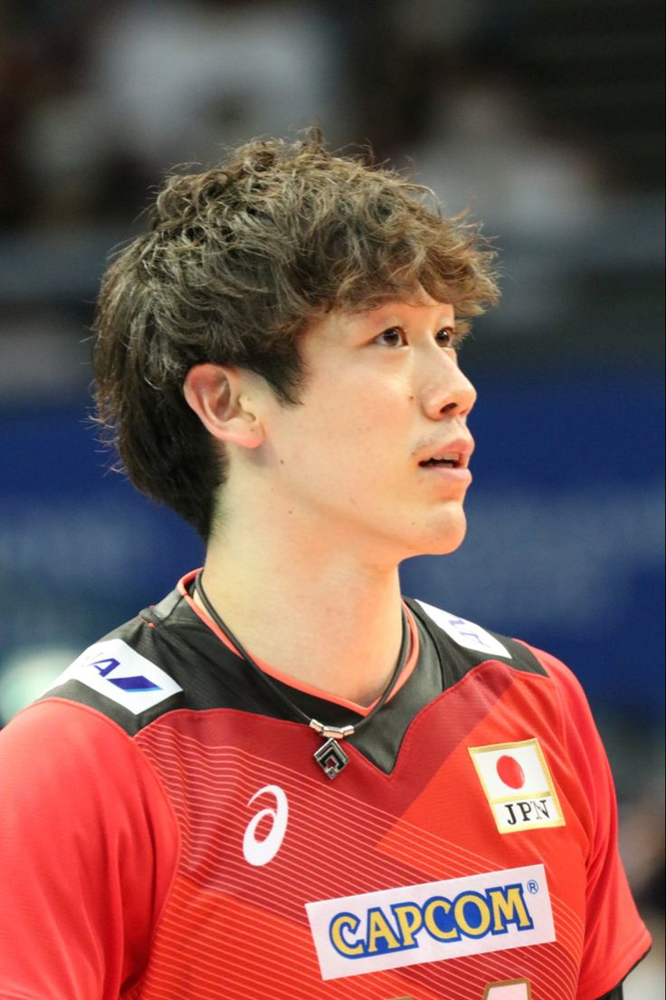
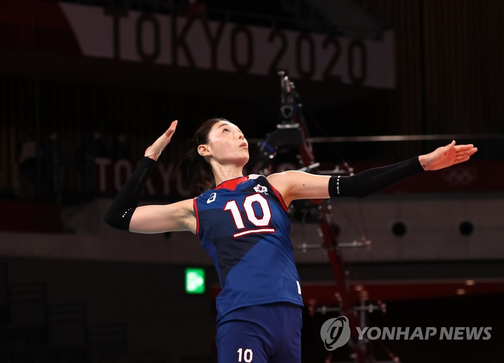
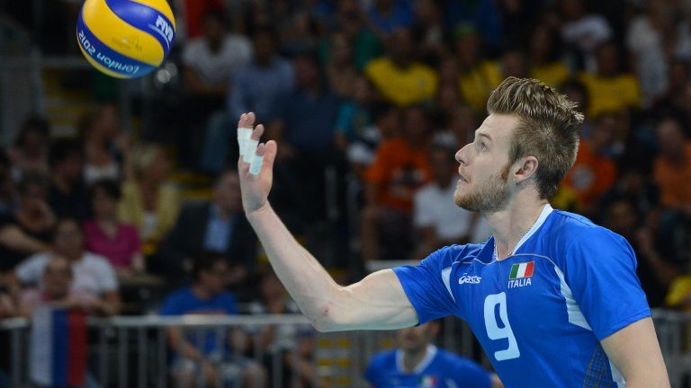

In the 2016–17 Turkish Women's Volleyball League season, Zehra Güneş was loaned out to Beşiktaş J.K., another women's volleyball team. The next season, she returned to her home club. She enjoyed her first league champion title in the 2017–18 season with Vakıfbank Istanbul.
Ishikawa was named as the "Best outside spiker" at the FIVB World Cup (2015, 2019), FIVB Nations League (2023, 2024), Asian Championship (2017, 2019, 2021), as well as the "Most valuable player" at the Asian Championship (2017, 2023). Ishikawa is the first volleyball player to have a wax figure in Japan.
Kim Yeon-koung (Korean: 김연경; Hanja: 金軟景; RR: Kim Yeon-gyeong, Korean pronunciation: [kim.jʌngjʌŋ]; born 26 February 1988) is a South Korean professional volleyball player and a former member of the FIVB Athletes' Commission. She is an outside hitter and the former captain of the South Korean National Team. She announced her retirement from the national team in August 2021.[8]
Ivan Vyacheslavovich Zaytsev (Italian: [ˈiːvan ˈdzaittsef, -ev]; Russian: Иван Вячеславович Зайцев, IPA: [ɪˈvan vʲɪtɕɪˈslavəvʲɪdʑ ˈzajtsɨf]; born 2 October 1988), nicknamed lo Zar ('the Tsar'), is an Italian professional volleyball player of Russian origin, former captain of Italy men's national volleyball team, a bronze medalist of the Olympic Games London 2012, silver medalist of the European Championship (2011, 2013), bronze medalist of the World League (2013, 2014), Italian Champion (2014) and silver medalist of the Olympic Games Rio 2016.